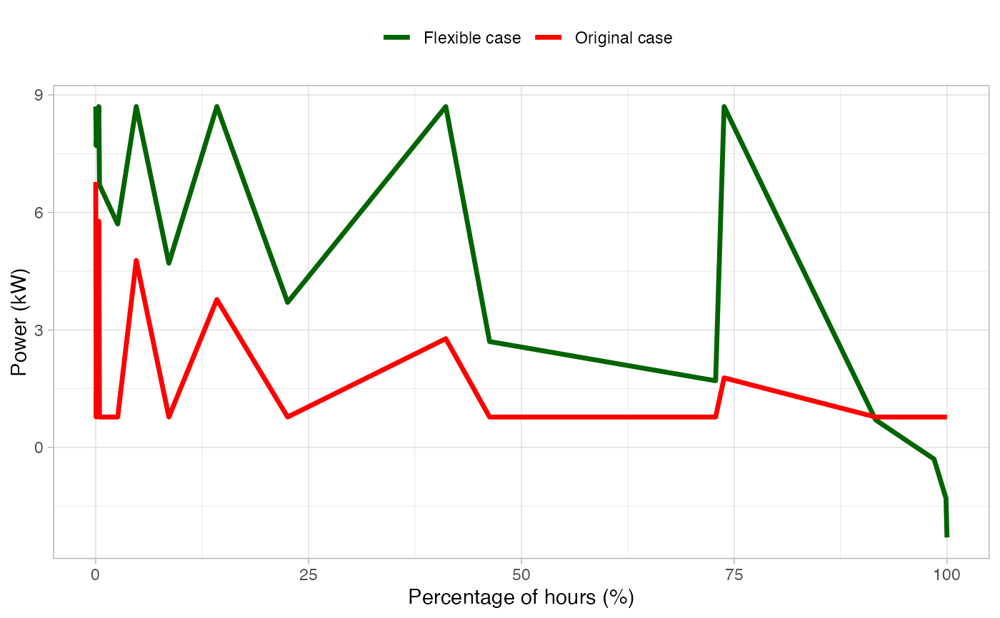
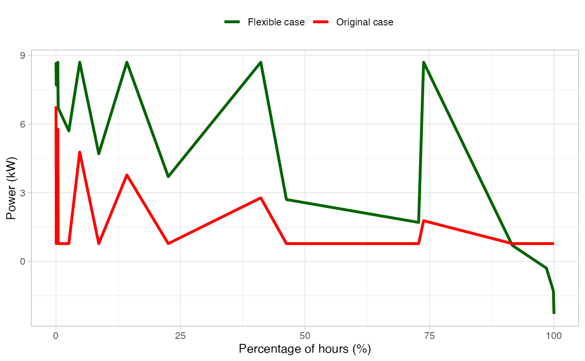

HTML interactive plot showing the graphical representation of a load duration curve.
The Load Duration Curve (LDC) represents the percentage of time that a specific
value of power has been used in the electrical grid for a specific time period.
It's widely used for power system planning and grid reliability assessments.
Also, a comparison between the original scenario is done when
original_df is not NULL.
Examples
df <- dplyr::select(
energy_profiles,
datetime,
consumption = building
)
head(df)
#> # A tibble: 6 × 2
#> datetime consumption
#> <dttm> <dbl>
#> 1 2023-01-01 00:00:00 2.61
#> 2 2023-01-01 00:15:00 2.42
#> 3 2023-01-01 00:30:00 2.23
#> 4 2023-01-01 00:45:00 2.04
#> 5 2023-01-01 01:00:00 1.85
#> 6 2023-01-01 01:15:00 1.78
plot_load_duration_curve(df)
 # Build another random building profile
building_variation <- rnorm(nrow(df), mean = 0, sd = 1)
df2 <- dplyr::mutate(df, consumption = consumption + building_variation)
plot_load_duration_curve(df2, original_df = df)

# Build another random building profile
building_variation <- rnorm(nrow(df), mean = 0, sd = 1)
df2 <- dplyr::mutate(df, consumption = consumption + building_variation)
plot_load_duration_curve(df2, original_df = df)
